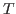
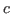
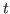
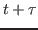
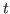
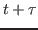

Next: Model Up: Introduction Previous: Preliminaries
Another example with perfectly observable prices is [3]. This is a differential game in which players must also consume a renewable resource. Also note that in this game, the demand function is linear and not a reserve price. Nevertheless, the demand function and the parameters are known exactly to the players. The authors then show that a collusive equilibrium exists (although collusion was not the main focus of their paper). Again, this is a game with no uncertainty.
The second approach in extending Bertrand games is with secret price cuts. That is, players do not observe the action of the other players in the previous rounds. Instead, stochastic profits are realized in each period and firms base their continuation strategy off of such a signal. For example, [4] shows that there exists a collusive equilibrium in which players play the collusive price if the total profit of everyone is greater than a certain constant and then revert to marginal cost pricing for  periods if the sum total of profits is below , and then return. In other words, there is a finite punishment period in which the players cut prices.
Other work such as [5] and [2] show how there exist information sharing mechanisms that facilitate collusion. For example, after each period firms may have an incentive to share their private profit information. For example, if firms profits are correlated, each has an incentive to truthfully announce their profits because if they announce profits that are ``far away'' from their opponent, the opponent will think they are lying and therefore enter a punishment phase. Again, these models assume private profit and pricing information.
Note the difference between the two approaches to the repeated
Bertrand game. One is where all information is known and observable
(demand, prices, profits, etc) and the other is when firms receive a
signal that is correlated with both demand and the other player's
prices. That is, firms can choose to undercut the market but they run
the risk of their signal being too strong. The event-driven framework
falls into the second category of secrete price cuts. However, the
nature of the ``correlation'' between prices and information is
different. In the event-driven framework, a player can undercut the
market without generating any signal to the other players. The
reason is that in the event-driven framework, the players observe
their opponents prices subject to a stochastic lag. That is, if
player  under undercuts the market at time , player might
not find out about the undercut until time . However, neither
under undercuts the market at time , player might
not find out about the undercut until time . However, neither
 nor know exactly when prices will be made public.
Therefore, it might be optimal for
nor know exactly when prices will be made public.
Therefore, it might be optimal for  to undercut the market for a
fixed amount of time and then, after realizing he has not been caught,
return to the collusive price. In other words, players in the
event-driven Bertrand model do not focus on what their
information tells them about the other player's strategies but
when they will receive information about other player's
strategies.
to undercut the market for a
fixed amount of time and then, after realizing he has not been caught,
return to the collusive price. In other words, players in the
event-driven Bertrand model do not focus on what their
information tells them about the other player's strategies but
when they will receive information about other player's
strategies.
Although this will be made clearer in the following section, in the event-driven Bertrand model, the players almost always do not know demand or the other players' price. They only observe signals in sporadic intervals and there is no restriction that players must learn of a change immediately after it happens. In other words, the event-driven Bertrand game is a new version of secret price cuts (in which players are not apprised of the exact state of demand or other players' prices).
justin 2016-05-10